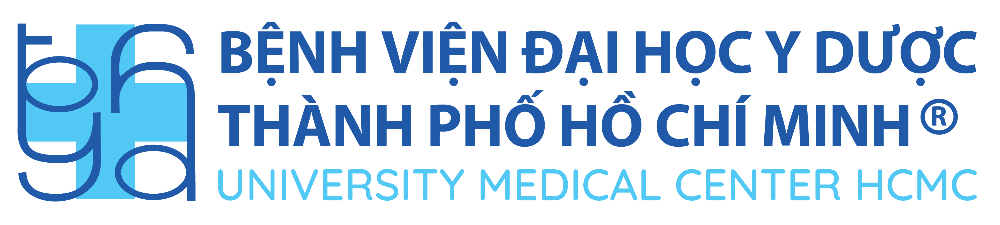

<!DOCTYPE html>
<html lang="vi">
<head>
    <meta charset="UTF-8">
    <meta name="viewport" content="width=device-width, initial-scale=1.0">
    <title>Công cụ AI cho Công tác Hành chính</title>
    <script src="https://cdn.tailwindcss.com"></script>
    <script src="https://unpkg.com/react@18/umd/react.production.min.js"></script>
    <script src="https://unpkg.com/react-dom@18/umd/react-dom.production.min.js"></script>
    <script src="https://unpkg.com/@babel/standalone/babel.min.js"></script>
    <style>
        @keyframes fadeIn {
            from { opacity: 0; transform: translateY(-10px); }
            to { opacity: 1; transform: translateY(0); }
        }
        .animate-fadeIn {
            animation: fadeIn 0.3s ease-out;
        }
    </style>
</head>
<body>
    <div id="root"></div>

    <script type="text/babel">
        const { useState } = React;

        // Lucide icons as SVG components
        const ExternalLink = ({ size = 24, className = "" }) => (
            <svg xmlns="http://www.w3.org/2000/svg" width={size} height={size} viewBox="0 0 24 24" fill="none" stroke="currentColor" strokeWidth="2" strokeLinecap="round" strokeLinejoin="round" className={className}>
                <path d="M18 13v6a2 2 0 0 1-2 2H5a2 2 0 0 1-2-2V8a2 2 0 0 1 2-2h6"></path>
                <polyline points="15 3 21 3 21 9"></polyline>
                <line x1="10" y1="14" x2="21" y2="3"></line>
            </svg>
        );

        const BookOpen = ({ size = 24, className = "" }) => (
            <svg xmlns="http://www.w3.org/2000/svg" width={size} height={size} viewBox="0 0 24 24" fill="none" stroke="currentColor" strokeWidth="2" strokeLinecap="round" strokeLinejoin="round" className={className}>
                <path d="M2 3h6a4 4 0 0 1 4 4v14a3 3 0 0 0-3-3H2z"></path>
                <path d="M22 3h-6a4 4 0 0 0-4 4v14a3 3 0 0 1 3-3h7z"></path>
            </svg>
        );

        const Mic = ({ size = 24, className = "" }) => (
            <svg xmlns="http://www.w3.org/2000/svg" width={size} height={size} viewBox="0 0 24 24" fill="none" stroke="currentColor" strokeWidth="2" strokeLinecap="round" strokeLinejoin="round" className={className}>
                <path d="M12 1a3 3 0 0 0-3 3v8a3 3 0 0 0 6 0V4a3 3 0 0 0-3-3z"></path>
                <path d="M19 10v2a7 7 0 0 1-14 0v-2"></path>
                <line x1="12" y1="19" x2="12" y2="23"></line>
                <line x1="8" y1="23" x2="16" y2="23"></line>
            </svg>
        );

        const Presentation = ({ size = 24, className = "" }) => (
            <svg xmlns="http://www.w3.org/2000/svg" width={size} height={size} viewBox="0 0 24 24" fill="none" stroke="currentColor" strokeWidth="2" strokeLinecap="round" strokeLinejoin="round" className={className}>
                <path d="M2 3h20"></path>
                <path d="M21 3v11a2 2 0 0 1-2 2H5a2 2 0 0 1-2-2V3"></path>
                <path d="m7 21 5-5 5 5"></path>
            </svg>
        );

        const Check = ({ size = 24, className = "" }) => (
            <svg xmlns="http://www.w3.org/2000/svg" width={size} height={size} viewBox="0 0 24 24" fill="none" stroke="currentColor" strokeWidth="2" strokeLinecap="round" strokeLinejoin="round" className={className}>
                <polyline points="20 6 9 17 4 12"></polyline>
            </svg>
        );

        const X = ({ size = 24, className = "" }) => (
            <svg xmlns="http://www.w3.org/2000/svg" width={size} height={size} viewBox="0 0 24 24" fill="none" stroke="currentColor" strokeWidth="2" strokeLinecap="round" strokeLinejoin="round" className={className}>
                <line x1="18" y1="6" x2="6" y2="18"></line>
                <line x1="6" y1="6" x2="18" y2="18"></line>
            </svg>
        );

        const AlertCircle = ({ size = 24, className = "" }) => (
            <svg xmlns="http://www.w3.org/2000/svg" width={size} height={size} viewBox="0 0 24 24" fill="none" stroke="currentColor" strokeWidth="2" strokeLinecap="round" strokeLinejoin="round" className={className}>
                <circle cx="12" cy="12" r="10"></circle>
                <line x1="12" y1="8" x2="12" y2="12"></line>
                <line x1="12" y1="16" x2="12.01" y2="16"></line>
            </svg>
        );

        const Info = ({ size = 24, className = "" }) => (
            <svg xmlns="http://www.w3.org/2000/svg" width={size} height={size} viewBox="0 0 24 24" fill="none" stroke="currentColor" strokeWidth="2" strokeLinecap="round" strokeLinejoin="round" className={className}>
                <circle cx="12" cy="12" r="10"></circle>
                <line x1="12" y1="16" x2="12" y2="12"></line>
                <line x1="12" y1="8" x2="12.01" y2="8"></line>
            </svg>
        );

        const AIToolsPortal = () => {
            const [activeCategory, setActiveCategory] = useState('summary');
            const [expandedTool, setExpandedTool] = useState(null);

            const tools = {
                summary: [
                    {
                        name: "Resoomer",
                        tagline: "Chuyên gia tóm tắt tiếng Việt",
                        url: "https://resoomer.com",
                        icon: "📝",
                        color: "from-emerald-500 to-teal-600",
                        features: [
                            "Tóm tắt văn bản tiếng Việt chính xác cao",
                            "Hỗ trợ nhiều định dạng: PDF, DOCX, TXT",
                            "Tự động nhận diện ý chính và luận điểm quan trọng",
                            "Tóm tắt nhanh chỉ trong vài giây"
                        ],
                        pros: [
                            "Xử lý tiếng Việt có dấu rất tốt",
                            "Giao diện đơn giản, dễ sử dụng",
                            "Miễn phí cho văn bản ngắn",
                            "Hỗ trợ xuất kết quả ra nhiều định dạng"
                        ],
                        cons: [
                            "Phiên bản miễn phí giới hạn số ký tự",
                            "Đôi khi bỏ sót chi tiết quan trọng với văn bản chuyên ngành",
                            "Cần đăng ký tài khoản để sử dụng đầy đủ"
                        ],
                        useCases: [
                            "Tóm tắt nghị quyết, quyết định hành chính",
                            "Rút gọn báo cáo dài thành bản tóm tắt cho lãnh đạo",
                            "Tóm tắt văn bản pháp luật, quy định nội bộ",
                            "Chuẩn bị tài liệu họp nhanh từ văn bản gốc dài"
                        ],
                        notes: [
                            "Nên review lại nội dung tóm tắt trước khi sử dụng chính thức",
                            "Với văn bản y khoa chuyên sâu, cần kiểm tra thuật ngữ",
                            "Không nên dùng cho văn bản mật hoặc thông tin bệnh nhân"
                        ],
                        guide: [
                            "Truy cập website Resoomer",
                            "Copy văn bản cần tóm tắt vào ô text",
                            "Nhấn nút 'Resoomer' để tự động tóm tắt",
                            "Điều chỉnh độ dài tóm tắt nếu cần (slider bên phải)",
                            "Copy hoặc xuất kết quả ra file"
                        ]
                    },
                    {
                        name: "TLDR This",
                        tagline: "Rút gọn đúng trọng tâm cho bài dài",
                        url: "https://tldrthis.com",
                        icon: "⚡",
                        color: "from-blue-500 to-indigo-600",
                        features: [
                            "AI tóm tắt thông minh, giữ nguyên ý chính",
                            "Hỗ trợ tóm tắt đường dẫn bài viết trên web",
                            "Tóm tắt nhiều cấp độ: ngắn gọn → chi tiết",
                            "Tiện ích mở rộng trình duyệt tiện lợi"
                        ],
                        pros: [
                            "Tóm tắt chính xác các bài viết dài",
                            "Có tiện ích cho Chrome/Firefox - tóm tắt ngay trên trang web",
                            "Hỗ trợ nhiều ngôn ngữ bao gồm tiếng Việt",
                            "Tùy chọn độ dài và mức độ chi tiết"
                        ],
                        cons: [
                            "Tiếng Việt không tốt bằng Resoomer",
                            "Phiên bản miễn phí giới hạn số bài/ngày",
                            "Đôi khi khó với văn bản chuyên ngành y khoa"
                        ],
                        useCases: [
                            "Tóm tắt các bài báo, nghiên cứu khoa học từ web",
                            "Rút gọn thư điện tử dài thành các điểm chính",
                            "Đọc nhanh tài liệu tham khảo dài",
                            "Tóm tắt bản tin, thông báo nội bộ"
                        ],
                        notes: [
                            "Tốt nhất cho văn bản tiếng Anh",
                            "Với tiếng Việt nên kết hợp Resoomer để so sánh",
                            "Tiện ích mở rộng cần quyền truy cập trang web"
                        ],
                        guide: [
                            "Cài đặt tiện ích TLDR This (khuyến nghị) hoặc dùng web",
                            "Dán văn bản hoặc đường dẫn vào ô nhập liệu",
                            "Chọn mức độ tóm tắt (Ngắn/Trung bình/Dài)",
                            "Nhấn 'TLDR' để xử lý",
                            "Đọc kết quả và sao chép nội dung cần thiết"
                        ]
                    }
                ],
                transcription: [
                    {
                        name: "Otter.ai",
                        tagline: "Chuyên chuyển giọng nói thời gian thực cho họp",
                        url: "https://otter.ai",
                        icon: "🎙️",
                        color: "from-violet-500 to-purple-600",
                        features: [
                            "Ghi âm và chuyển đổi giọng nói thành văn bản thời gian thực",
                            "Nhận diện được nhiều người nói khác nhau",
                            "Tự động tạo bản tóm tắt và danh sách công việc",
                            "Tích hợp Zoom, Google Meet, Microsoft Teams"
                        ],
                        pros: [
                            "Chất lượng chuyển văn bản tiếng Anh rất cao",
                            "Chuyển đổi thời gian thực - thấy chữ ngay khi nói",
                            "Tự động phân biệt người nói",
                            "Có ứng dụng di động tiện lợi",
                            "Tích hợp tốt với các nền tảng họp trực tuyến"
                        ],
                        cons: [
                            "Chưa hỗ trợ tiếng Việt",
                            "Miễn phí giới hạn 600 phút/tháng",
                            "Cần kết nối mạng tốt để chuyển đổi thời gian thực",
                            "Độ chính xác giảm nếu nhiều người nói cùng lúc"
                        ],
                        useCases: [
                            "Ghi chép biên bản cuộc họp tự động",
                            "Ghi chú trong hội thảo, buổi đào tạo tiếng Anh",
                            "Chuyển đổi phỏng vấn, trao đổi công việc thành văn bản",
                            "Tạo phụ đề cho video đào tạo tiếng Anh"
                        ],
                        notes: [
                            "CHỈ dùng cho nội dung tiếng Anh",
                            "Không dùng cho thông tin bệnh nhân (bảo mật)",
                            "Nên kiểm tra và chỉnh sửa bản ghi sau cuộc họp",
                            "Miễn phí 600 phút/tháng - đủ cho khoảng 10 cuộc họp 1 giờ"
                        ],
                        guide: [
                            "Tạo tài khoản miễn phí tại Otter.ai",
                            "Chọn 'Ghi âm' để bắt đầu ghi âm cuộc họp",
                            "Hoặc tích hợp với Zoom/Teams để tự động ghi",
                            "Xem bản ghi thời gian thực trong khi họp",
                            "Sau họp: xem lại, chỉnh sửa, và xuất biên bản"
                        ]
                    },
                    {
                        name: "Notta",
                        tagline: "Chuyên Speech-to-text đa nền tảng, nhẹ",
                        url: "https://notta.ai",
                        icon: "🗣️",
                        color: "from-cyan-500 to-blue-600",
                        features: [
                            "Hỗ trợ 104 ngôn ngữ bao gồm tiếng Việt",
                            "Tải tệp âm thanh/video lên để chuyển đổi",
                            "Chuyển đổi thời gian thực cho cuộc họp",
                            "Tích hợp Google Meet, Zoom, Teams"
                        ],
                        pros: [
                            "HỖ TRỢ TIẾNG VIỆT khá tốt",
                            "Giao diện đơn giản, dễ sử dụng",
                            "Cho phép tải tệp lên để chuyển đổi ngoại tuyến",
                            "Có ứng dụng di động và web, đồng bộ tốt",
                            "Giá cả hợp lý so với Otter"
                        ],
                        cons: [
                            "Độ chính xác tiếng Việt chưa hoàn hảo (80-85%)",
                            "Miễn phí chỉ 120 phút/tháng",
                            "Đôi khi nhầm lẫn từ đồng âm tiếng Việt",
                            "Cần phải đọc rõ ràng để chính xác cao"
                        ],
                        useCases: [
                            "Chuyển đổi cuộc họp tiếng Việt thành văn bản",
                            "Chuyển đổi phỏng vấn bệnh nhân (phi nhận dạng)",
                            "Ghi chép hội thảo, tập huấn tiếng Việt",
                            "Chuyển tệp ghi âm cũ thành văn bản"
                        ],
                        notes: [
                            "Cần xem lại và sửa lỗi chính tả tiếng Việt sau khi chuyển đổi",
                            "Tốt nhất với giọng nói miền Nam, chuẩn",
                            "Không đảm bảo 100% chính xác với thuật ngữ y khoa",
                            "Nên thử với tệp ngắn trước khi dùng cho cuộc họp quan trọng"
                        ],
                        guide: [
                            "Đăng ký tài khoản tại Notta.ai",
                            "Chọn ngôn ngữ là 'Tiếng Việt' trong cài đặt",
                            "Chọn 'Nhập' để tải tệp âm thanh/video CÓ SẴN lên",
                            "Hoặc chọn 'Ghi âm' để ghi âm trực tiếp",
                            "Chờ xử lý xong, xem lại và chỉnh sửa bản ghi",
                            "Xuất ra Word/Text để sử dụng"
                        ]
                    },
                    {
                        name: "Fireflies.ai",
                        tagline: "Chuyên biên bản theo mẫu",
                        url: "https://fireflies.ai",
                        icon: "🔥",
                        color: "from-orange-500 to-red-600",
                        features: [
                            "Trợ lý AI tham gia cuộc họp tự động",
                            "Tạo biên bản theo mẫu có sẵn",
                            "Tự động trích xuất công việc cần làm và quyết định",
                            "Tích hợp với CRM, công cụ quản lý dự án"
                        ],
                        pros: [
                            "Tự động tham gia họp và ghi chép - không cần làm gì",
                            "Tạo biên bản có cấu trúc rõ ràng (ai nói gì, công việc cần làm...)",
                            "Tìm kiếm nhanh trong các cuộc họp cũ",
                            "Tích hợp sâu với Slack, Notion, Salesforce...",
                            "Tóm tắt bằng AI rất chi tiết và có cấu trúc"
                        ],
                        cons: [
                            "CHỈ hỗ trợ tiếng Anh",
                            "Cần thêm AI bot vào cuộc họp (có thể khó với họp nội bộ)",
                            "Miễn phí giới hạn tính năng",
                            "Không phù hợp với cuộc họp cần bảo mật cao"
                        ],
                        useCases: [
                            "Ghi chép tự động các cuộc họp quốc tế, đối tác nước ngoài",
                            "Tạo biên bản họp có cấu trúc cho ban lãnh đạo",
                            "Trích xuất công việc cần làm và phân công từ cuộc họp",
                            "Lưu trữ và tìm kiếm lại nội dung các cuộc họp"
                        ],
                        notes: [
                            "CHỈ dùng cho cuộc họp tiếng Anh",
                            "Cần thông báo cho người tham gia về việc có bot ghi âm",
                            "Không dùng cho cuộc họp có thông tin nhạy cảm",
                            "Tốt nhất cho cuộc họp với đối tác quốc tế"
                        ],
                        guide: [
                            "Đăng ký Fireflies.ai và kết nối lịch (Google/Outlook)",
                            "Bot Fred sẽ tự động tham gia các cuộc họp trong lịch",
                            "Hoặc thêm fred@fireflies.ai vào lời mời họp",
                            "Sau họp, kiểm tra email - Fireflies gửi biên bản tự động",
                            "Vào bảng điều khiển để xem bản ghi, tóm tắt, công việc cần làm"
                        ]
                    }
                ],
                presentation: [
                    {
                        name: "PowerPoint Copilot",
                        tagline: "AI tích hợp sẵn trong PowerPoint",
                        url: "https://www.microsoft.com/en-us/microsoft-365/copilot",
                        icon: "📊",
                        color: "from-red-500 to-orange-600",
                        features: [
                            "Tạo bài trình bày từ văn bản/dàn ý trong vài giây",
                            "Tự động áp dụng chủ đề và định dạng theo thương hiệu",
                            "Gợi ý nội dung và cải thiện trang trình bày",
                            "Tích hợp hoàn toàn trong PowerPoint - không cần chuyển công cụ"
                        ],
                        pros: [
                            "Tích hợp sẵn - không cần ra khỏi PowerPoint",
                            "Tự động khớp với mẫu doanh nghiệp đang dùng",
                            "Có thể chỉnh sửa chi tiết sau khi tạo",
                            "Hỗ trợ tiếng Việt",
                            "Tạo từ tài liệu Word, PDF có sẵn"
                        ],
                        cons: [
                            "Cần giấy phép Microsoft 365 Copilot (có phí)",
                            "Độ sáng tạo thiết kế thấp hơn Gamma",
                            "Phụ thuộc vào mẫu có sẵn trong tệp",
                            "Cần kết nối mạng"
                        ],
                        useCases: [
                            "Tạo nhanh trang trình bày từ báo cáo Word có sẵn",
                            "Biến dàn ý cuộc họp thành bài trình bày hoàn chỉnh",
                            "Cập nhật số liệu vào mẫu PPT có sẵn",
                            "Tạo trang trình bày tuân thủ 100% hướng dẫn thương hiệu bệnh viện"
                        ],
                        notes: [
                            "Cần có Office 365 E3/E5 + giấy phép Copilot",
                            "Tốt nhất khi đã có mẫu thương hiệu sẵn",
                            "Nên cung cấp dàn ý rõ ràng để kết quả tốt",
                            "Xem lại kỹ nội dung trước khi trình bày"
                        ],
                        guide: [
                            "Mở PowerPoint, tạo tệp mới",
                            "Nhấp biểu tượng Copilot trên thanh công cụ",
                            "Chọn 'Tạo bài trình bày từ tệp' hoặc 'từ gợi ý'",
                            "Dán dàn ý hoặc chọn tệp Word/PDF",
                            "Copilot sẽ tự động tạo trang trình bày theo thương hiệu hiện tại",
                            "Xem lại, chỉnh sửa và điều chỉnh theo ý muốn"
                        ]
                    },
                    {
                        name: "Gamma",
                        tagline: "Tạo bài trình bày đẹp không cần thiết kế",
                        url: "https://gamma.app",
                        icon: "✨",
                        color: "from-pink-500 to-purple-600",
                        features: [
                            "Tạo bài trình bày tuyệt đẹp từ văn bản/dàn ý",
                            "AI thiết kế tự động - không cần kỹ năng thiết kế",
                            "Nhiều chủ đề hiện đại, hợp thời",
                            "Xuất ra PDF, PPT hoặc chia sẻ liên kết"
                        ],
                        pros: [
                            "Thiết kế cực kỳ đẹp và hiện đại",
                            "Cực nhanh - tạo bộ trình bày hoàn chỉnh trong vài phút",
                            "Không cần kỹ năng thiết kế",
                            "Tự động điều chỉnh - xem đẹp trên mọi thiết bị",
                            "Có thể tùy chỉnh màu sắc, phông chữ thương hiệu"
                        ],
                        cons: [
                            "Không khớp 100% hướng dẫn thương hiệu cố định",
                            "Miễn phí giới hạn số bài trình bày",
                            "Cần xuất ra PPT nếu muốn chỉnh sửa ngoại tuyến",
                            "Hỗ trợ tiếng Việt nhưng phông chữ có thể không đẹp"
                        ],
                        useCases: [
                            "Tạo bài trình bày đẹp cho hội thảo, buổi đào tạo",
                            "Bộ trình bày giới thiệu cho dự án, đề xuất mới",
                            "Báo cáo với đồ họa thông tin đẹp mắt",
                            "Khi cần tạo trang trình bày nhanh mà đẹp chuyên nghiệp"
                        ],
                        notes: [
                            "Tốt nhất cho bài trình bày bên ngoài, không bắt buộc thương hiệu nghiêm ngặt",
                            "Nên tùy chỉnh màu sắc thương hiệu trong cài đặt",
                            "Có thể nhập hướng dẫn thương hiệu bằng cách mô tả",
                            "Xuất sang PPT để tinh chỉnh theo thương hiệu cụ thể nếu cần"
                        ],
                        guide: [
                            "Truy cập Gamma.app và đăng ký tài khoản",
                            "Nhấp 'Tạo mới' → chọn 'Bài trình bày'",
                            "Dán dàn ý hoặc mô tả nội dung muốn tạo",
                            "Chọn chủ đề hoặc để AI gợi ý",
                            "AI sẽ tạo toàn bộ trang trình bày trong 1-2 phút",
                            "Tùy chỉnh màu sắc, phông chữ, bố cục nếu cần",
                            "Xuất ra PDF/PPT hoặc chia sẻ liên kết trực tiếp"
                        ]
                    }
                ]
            };

            const categories = [
                { id: 'summary', name: 'Tóm tắt văn bản', icon: BookOpen },
                { id: 'transcription', name: 'Chuyển giọng nói thành text', icon: Mic },
                { id: 'presentation', name: 'Tạo PowerPoint', icon: Presentation }
            ];

            const AIToolCard = ({ tool }) => {
                const isExpanded = expandedTool === tool.name;

                return (
                    <div className="bg-white rounded-2xl shadow-lg overflow-hidden border border-gray-100 hover:shadow-2xl transition-all duration-300">
                        <div className={`bg-gradient-to-br ${tool.color} p-6 text-white relative overflow-hidden`}>
                            <div className="absolute -right-4 -top-4 text-8xl opacity-20">{tool.icon}</div>
                            <div className="relative z-10">
                                <div className="flex items-start justify-between">
                                    <div>
                                        <h3 className="text-2xl font-bold mb-2">{tool.name}</h3>
                                        <p className="text-white/90 text-sm">{tool.tagline}</p>
                                    </div>
                                    <a
                                        href={tool.url}
                                        target="_blank"
                                        rel="noopener noreferrer"
                                        className="bg-white/20 hover:bg-white/30 p-3 rounded-xl backdrop-blur-sm transition-all"
                                    >
                                        <ExternalLink size={20} />
                                    </a>
                                </div>
                            </div>
                        </div>

                        <div className="p-6">
                            <div className="mb-5">
                                <h4 className="text-sm font-bold text-gray-500 uppercase tracking-wider mb-3">Tính năng chính</h4>
                                <ul className="space-y-2">
                                    {tool.features.map((feature, idx) => (
                                        <li key={idx} className="flex items-start">
                                            <Check className="w-5 h-5 text-green-500 mr-2 flex-shrink-0 mt-0.5" />
                                            <span className="text-gray-700 text-sm">{feature}</span>
                                        </li>
                                    ))}
                                </ul>
                            </div>

                            <button
                                onClick={() => setExpandedTool(isExpanded ? null : tool.name)}
                                className="w-full py-3 px-4 bg-gray-50 hover:bg-gray-100 rounded-xl text-gray-700 font-medium transition-all flex items-center justify-center mb-4"
                            >
                                <Info size={18} className="mr-2" />
                                {isExpanded ? 'Thu gọn chi tiết' : 'Xem chi tiết đầy đủ'}
                            </button>

                            {isExpanded && (
                                <div className="space-y-5 animate-fadeIn">
                                    <div className="grid md:grid-cols-2 gap-4">
                                        <div className="bg-green-50 rounded-xl p-4">
                                            <h4 className="text-sm font-bold text-green-700 uppercase tracking-wider mb-3 flex items-center">
                                                <Check className="w-4 h-4 mr-1" /> Ưu điểm
                                            </h4>
                                            <ul className="space-y-2">
                                                {tool.pros.map((pro, idx) => (
                                                    <li key={idx} className="text-sm text-green-800 flex items-start">
                                                        <span className="text-green-500 mr-2">•</span>
                                                        {pro}
                                                    </li>
                                                ))}
                                            </ul>
                                        </div>
                                        <div className="bg-red-50 rounded-xl p-4">
                                            <h4 className="text-sm font-bold text-red-700 uppercase tracking-wider mb-3 flex items-center">
                                                <X className="w-4 h-4 mr-1" /> Nhược điểm
                                            </h4>
                                            <ul className="space-y-2">
                                                {tool.cons.map((con, idx) => (
                                                    <li key={idx} className="text-sm text-red-800 flex items-start">
                                                        <span className="text-red-500 mr-2">•</span>
                                                        {con}
                                                    </li>
                                                ))}
                                            </ul>
                                        </div>
                                    </div>

                                    <div className="bg-blue-50 rounded-xl p-4">
                                        <h4 className="text-sm font-bold text-blue-700 uppercase tracking-wider mb-3">Trường hợp sử dụng</h4>
                                        <ul className="space-y-2">
                                            {tool.useCases.map((useCase, idx) => (
                                                <li key={idx} className="text-sm text-blue-900 flex items-start">
                                                    <span className="text-blue-500 mr-2 font-bold">{idx + 1}.</span>
                                                    {useCase}
                                                </li>
                                            ))}
                                        </ul>
                                    </div>

                                    <div className="bg-amber-50 rounded-xl p-4">
                                        <h4 className="text-sm font-bold text-amber-700 uppercase tracking-wider mb-3 flex items-center">
                                            <AlertCircle className="w-4 h-4 mr-1" /> Lưu ý quan trọng
                                        </h4>
                                        <ul className="space-y-2">
                                            {tool.notes.map((note, idx) => (
                                                <li key={idx} className="text-sm text-amber-900 flex items-start">
                                                    <span className="text-amber-500 mr-2">⚠</span>
                                                    {note}
                                                </li>
                                            ))}
                                        </ul>
                                    </div>

                                    <div className="bg-purple-50 rounded-xl p-4">
                                        <h4 className="text-sm font-bold text-purple-700 uppercase tracking-wider mb-3">Hướng dẫn sử dụng</h4>
                                        <ol className="space-y-2">
                                            {tool.guide.map((step, idx) => (
                                                <li key={idx} className="text-sm text-purple-900 flex items-start">
                                                    <span className="bg-purple-200 text-purple-700 rounded-full w-6 h-6 flex items-center justify-center mr-3 flex-shrink-0 font-bold text-xs">
                                                        {idx + 1}
                                                    </span>
                                                    <span className="pt-0.5">{step}</span>
                                                </li>
                                            ))}
                                        </ol>
                                    </div>

                                    <a
                                        href={tool.url}
                                        target="_blank"
                                        rel="noopener noreferrer"
                                        className={`block w-full py-4 px-6 bg-gradient-to-r ${tool.color} text-white rounded-xl font-bold text-center hover:shadow-lg transition-all flex items-center justify-center`}
                                    >
                                        Truy cập {tool.name}
                                        <ExternalLink size={18} className="ml-2" />
                                    </a>
                                </div>
                            )}
                        </div>
                    </div>
                );
            };

            return (
                <div className="min-h-screen bg-gradient-to-br from-slate-50 via-blue-50 to-indigo-50">
                    <header className="bg-white border-b border-gray-200 shadow-sm sticky top-0 z-50 backdrop-blur-sm bg-white/90">
                        <div className="max-w-7xl mx-auto px-4 sm:px-6 lg:px-8 py-4 sm:py-6">
                            <div className="flex flex-col items-center text-center">
                                
                                <h1 className="text-2xl sm:text-3xl lg:text-4xl font-bold text-gray-900 mb-2">
                                    Công cụ AI cho Công tác Hành chính
                                </h1>
                                <p className="text-sm sm:text-base text-gray-600">
                                    Bệnh viện Đại học Y Dược TP. Hồ Chí Minh - Phòng Hành chính
                                </p>
                            </div>
                        </div>
                    </header>

                    <div className="max-w-7xl mx-auto px-4 sm:px-6 lg:px-8 py-4 sm:py-6">
                        <div className="flex justify-center">
                            <div className="bg-white rounded-2xl shadow-md p-2 flex flex-col sm:flex-row gap-2 w-full sm:w-auto">
                                {categories.map((category) => {
                                    const Icon = category.icon;
                                    return (
                                        <button
                                            key={category.id}
                                            onClick={() => {
                                                setActiveCategory(category.id);
                                                setExpandedTool(null);
                                            }}
                                            className={`px-4 sm:px-6 py-3 rounded-xl font-semibold transition-all flex items-center justify-center text-sm sm:text-base ${
                                                activeCategory === category.id
                                                    ? 'bg-gradient-to-r from-blue-500 to-indigo-600 text-white shadow-md'
                                                    : 'text-gray-600 hover:bg-gray-100'
                                            }`}
                                        >
                                            <Icon size={18} className="mr-2 flex-shrink-0" />
                                            <span className="whitespace-nowrap">{category.name}</span>
                                        </button>
                                    );
                                })}
                            </div>
                        </div>
                    </div>

                    <div className="max-w-7xl mx-auto px-4 sm:px-6 lg:px-8 pb-12">
                        <div className="grid grid-cols-1 lg:grid-cols-2 gap-4 sm:gap-6">
                            {tools[activeCategory].map((tool) => (
                                <AIToolCard key={tool.name} tool={tool} />
                            ))}
                        </div>
                    </div>

                    <footer className="bg-white border-t border-gray-200 mt-12">
                        <div className="max-w-7xl mx-auto px-4 sm:px-6 lg:px-8 py-6 text-center text-gray-600 text-sm">
                            <p>Phát triển bởi Phòng Hành chính - Bệnh viện Đại học Y Dược TP. Hồ Chí Minh</p>
                            <p className="mt-2">Cập nhật: Tháng 11/2025</p>
                        </div>
                    </footer>
                </div>
            );
        };

        ReactDOM.render(<AIToolsPortal />, document.getElementById('root'));
    </script>
</body>
</html>
